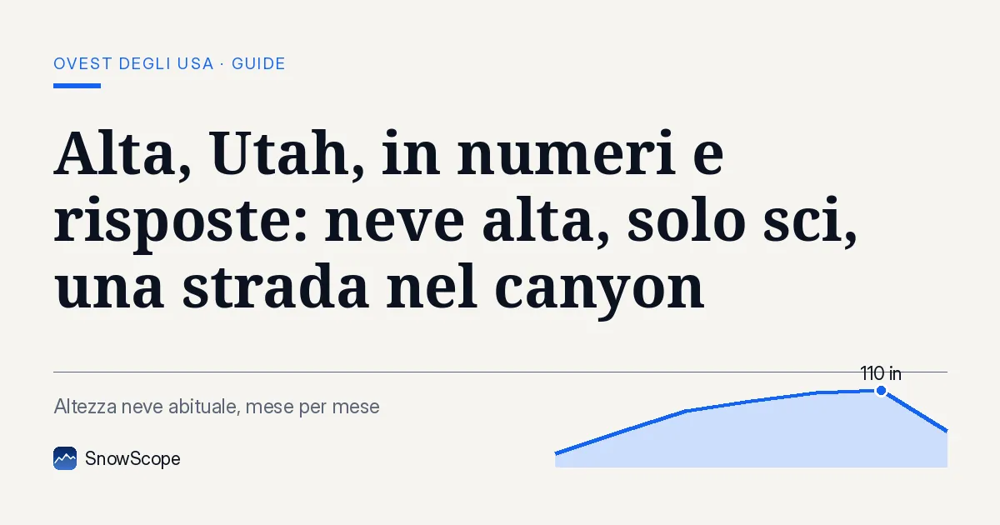

Alta, Utah, in numeri e risposte: neve alta, solo sci, una strada nel canyon
Alta gets more snow than almost any US ski area, and the pack stays deep for months. Before your first trip, know the three things that set it apart: skis only, steep terrain, and a single canyon road that can close in storms.
Le previsioni neve in tempo reale per Alta Ski Area nell'app SnowScopeAltezza neve, allerte powder e mappa 3D, gratis.

Profondità neve per quota: dove trovare la migliore copertura
La quota conta molto qui. Alla base, intorno a 8.530 ft (2.602 m), il picco abituale è 73 in (184 cm). A metà montagna, a 9.544 ft (2.909 m), raggiunge 109 in (276 cm). Vicino alla vetta, 10.554 ft (3.217 m), arriviamo a 137 in (348 cm). La metà superiore della montagna mantiene quasi il doppio della neve della base.
In 9 inverni su 10, a metà montagna si conservano almeno 20 in (50 cm) di copertura per 20 settimane consecutive. Questo significa da fine novembre ad aprile, gli sciatori forti hanno buone probabilità di neve solida sul terreno ripido sopra la stazione intermedia. All'inizio della stagione, però, è più sottile: la profondità media di novembre a metà montagna è solo 14 in (36 cm).

Mese per mese: quando trovare la neve
Dicembre ad aprile è quando pianificare un viaggio. Novembre e maggio sono rischiosi; l'ultima neve spesso cade a giugno, ma a quel punto la base è sottile. Dicembre porta di solito 42 in (106 cm) a metà montagna, gennaio 69 in (175 cm), febbraio 83 in (211 cm). Marzo è il mese più profondo, con 89 in (227 cm), e aprile ne conserva ancora 83 in (212 cm).
Febbraio e marzo offrono le migliori probabilità di neve profonda e stabile a tutte le quote. Se vai a dicembre, aspettati copertura solo sui pendii superiori. Alla vetta, aprile diventa il mese di picco con circa 110 in (279 cm), quindi gli sciatori di fine stagione che mirano alla neve primaverile dovrebbero andare in alto.
Tempeste e tipo di neve: perché la polvere è spesso leggera
Le tempeste attraversano il deserto del Gran Bacino prima di colpire le montagne Wasatch, il che significa che molta dell'umidità viene strizzata durante il viaggio. La neve che cade è spesso leggera e asciutta, un dono per gli sciatori. Ma le previsioni sono difficili: una tempesta non si comporta mai come l'ultima, quindi la fiducia in un singolo giorno di polvere è bassa.
L'area registra circa 545 in (13,8 m) di neve all'anno in media, uno dei più alti del Nord America. La maggior parte cade come polvere, ma la variabilità è alta. Fidati dei numeri di profondità più che della promessa di neve fresca in una determinata mattina.
Terreno per ogni livello: bowl ripidi, piste da crociera e piste per principianti
I 2.614 acri vanno da piste dolci in basso a chute e bowl seri vicino alla cima. I principianti restano in basso, dove le piste sono tranquille e indulgenti. Gli intermedi trovano lunghe e facili crociere che permettono loro di costruire velocità. Gli sciatori avanzati ed esperti vengono per i bowl ripidi, le strette radure alberate e le chute che tengono la polvere per giorni dopo una tempesta.
Il dislivello è 2.538 ft (774 m), compatto secondo gli standard della grande montagna ma denso di terreno. Nessuna pista piatta o traversata lenta con gatto da sci rende questo un posto dove gli sciatori bravi possono continuare a muoversi tutto il giorno senza lasciare il confine.
La neve sta diminuendo? Un confronto di 46 inverni
Abbiamo confrontato i primi 15 inverni del nostro record con gli ultimi 15. A metà montagna, il picco abituale è sceso da 111 in (283 cm) a 98 in (248 cm), e il numero di giorni nevosi è passato da 226 a 215. Il trend è reale ma graduale; la maggior parte delle stagioni porta ancora copertura profonda. Il margine di sicurezza per gli strati di base sottili si è semplicemente ridotto.
Lo scorso inverno, 2025-26, è stato il più magro dei 46 nel nostro record: a metà montagna il picco è stato solo 62 in (158 cm), ben sotto la media. Anche in quell'anno magro, la cima della montagna ha tenuto 75 in (191 cm). Gli sciatori di inizio stagione e quelli alla base ora affrontano più esposizione di roccia di quanto facessero decenni fa.
Come arrivare: la strada della canyon e cosa può fermarti
Alta si trova alla testa di Little Cottonwood Canyon, raggiungibile da State Route 210 da Salt Lake City. Al mattino di tempesta, il traffico aumenta e il pericolo valanghe può chiudere completamente la strada. Gli pneumatici invernali sono essenziali; le catene potrebbero essere richieste. Pianifica di lasciare la valle presto, specialmente nei giorni di neve fresca.
L'alloggio in cima è scarso, quindi la maggior parte dei visitatori sale dalla città o prende l'autobus. I posti letto si riempiono velocemente durante la settimana di Natale e a febbraio, quando la neve è più profonda e le famiglie hanno tempo libero. Nei giorni feriali di gennaio, la strada di solito è tranquilla.
Regole e sicurezza: solo sci, e lavoro di valanghe in fuori pista
Gli snowboarder non sono ammessi. Alta è una delle sole tre stazioni sciistiche USA con questa regola. Se il tuo gruppo include snowboarder, Snowbird si trova proprio attraverso la cresta, nello stesso canyon, e ha venduto un pass congiunto con Alta dal 2002, dando accesso a entrambi i resort e al terreno in mezzo.
In pista, la pattuglia di sci controlla il pericolo valanghe. Oltre il confine, questo è terreno serio di valanghe. Porta un trasmettitore, una sonda e una pala, sci con partner preparati e leggi il forecast dell'Utah Avalanche Center prima di ogni giorno fuori pista.
Consigli per sciatori
- Solo sci: Gli snowboarder nel tuo gruppo dovrebbero pianificare di sciare a Snowbird, proprio attraverso la cresta con un pass collegato.
- Mira a febbraio o marzo per la neve più profonda a tutte le quote e le migliori probabilità di un manto stabile.
- Al mattino di neve fresca, la strada della canyon è il collo di bottiglia, non lo sci. Lascia la valle presto.
- Dicembre può funzionare, ma aspettati copertura sottile alla base e a metà montagna. Vai in alto o aspetta gennaio.
- Vai fuori pista? Controlla il forecast dell'Utah Avalanche Center e non andare mai solo. Porta e sappi come usare l'attrezzatura di soccorso.
Su questi numeri
Le altezze neve delle località sono la neve più alta sui pendii superiori alla data indicata; sono stime per un'area, non una misura in un punto. Le previsioni possono cambiare. Leggi sempre il bollettino valanghe ufficiale prima del fuoripista.
Bollettini valanghe ufficiali: Utah Avalanche Center
Cita questo articolo
Per ricerca, didattica o stampa: numeri e grafici sono liberamente riutilizzabili con licenza CC BY 4.0 citando così.
SnowScope (2026), Alta, Utah, in numeri e risposte: neve alta, solo sci, una strada nel canyon, https://snowscope.app/blog/it/2026/11/alta-ski-area-questions-answered.html, consultato il 2026-11-09
SnowScope (Atlas Labs). (2026, November 9). Alta, Utah, in numeri e risposte: neve alta, solo sci, una strada nel canyon. SnowScope snow reports. https://snowscope.app/blog/it/2026/11/alta-ski-area-questions-answered.html
BibTeX
@misc{snowscope2026altaskiareaquestionsansw,
author = {{SnowScope (Atlas Labs)}},
title = {Alta, Utah, in numeri e risposte: neve alta, solo sci, una strada nel canyon},
year = {2026},
month = nov,
howpublished = {\url{https://snowscope.app/blog/it/2026/11/alta-ski-area-questions-answered.html}},
note = {Published 2026-11-09 14:17 UTC; accessed 2026-11-09}
}· CC BY 4.0 · Metodi, dati e strumenti →
Alta Ski Area: neve e temperatura per quota, quest'inverno vs lo scorso (strumenti) →
Segui Alta Ski Area
Gratis: un messaggio quando arriva la neve e il meteo ogni mattina.